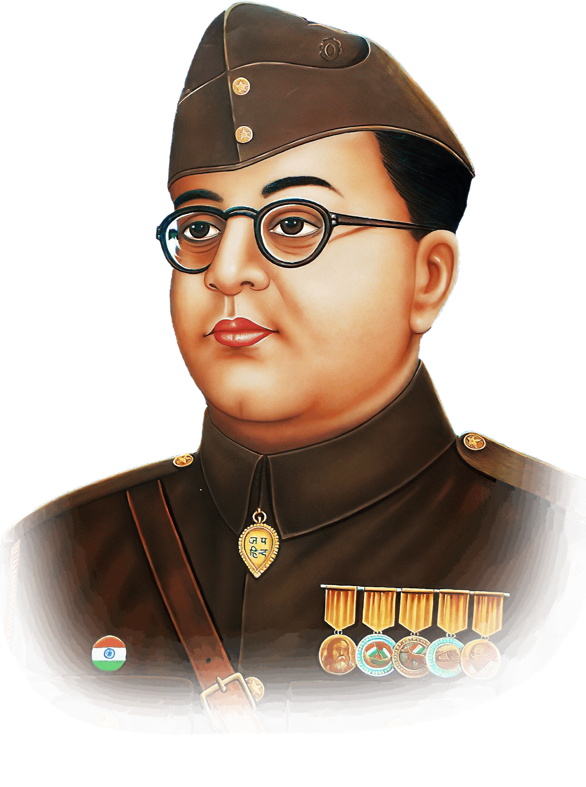

23 January 1897 – 18 August 1945
"Patriotism is not a matter of words, but of deeds."
Subhas Chandra Bose was an Indian nationalist whose defiance of British authority in India made
him a hero among many Indians, but his wartime alliances with Nazi Germany and
Imperial Japan left a legacy vexed by authoritarianism, anti-Semitism, and military
failure. The honorific Netaji (Bengali: "Respected Leader") was first applied to Bose
in Germany in early 1942—by the Indian soldiers of the Indische Legion and by the German
and Indian officials in the Special Bureau for India in Berlin. It is now used
throughout India.
Subhas Chandra Bose is considered the most influential freedom fighter with extraordinary leadership
skills and a charismatic orator. His famous slogans are 'tum mujhe khoon do, main tumhe aazadi dunga',
'Jai Hind', and 'Delhi Chalo'. He formed Azad Hind Fauj and made several contributions to India's freedom
struggle. He is known for his militant approach that he used to gain independence and for his socialist policies.
Birth: Cuttack, Odisha
Parents: Janakinath Bose (father) and Prabhavati Devi (mother)
Spouse: Emily Schenkl
Children: Anita Bose Pfaff
Education: Ravenshaw Collegiate School, Cuttack; Presidency College, Calcutta; University of Cambridge, England
Associations (Political Party): Indian National Congress; Forward Bloc; Indian National Army
Movements: Indian Freedom Movement
Political Ideology: Nationalism; Communism; Fascism-inclined
Religious Beliefs: Hinduism.